Chapter 12 · Design problem
Design a Chat System
Why chat runs on WebSocket instead of polling, why chat history lives in a key-value store, and how 1-on-1 messages, multi-device sync, small group chat and online presence actually flow.
TL;DR
- Scope: 1-on-1 and small group chat (max 100), online presence, multi-device, push notifications. Text only (< 100,000 chars), 50M DAU, history kept forever.
- WebSocket for sending and receiving: a persistent, bidirectional connection upgraded from HTTP. Polling wastes requests; long polling breaks with stateless servers. Login and profiles use HTTP.
- Components: stateless API servers behind a load balancer, stateful chat servers, presence servers, notification servers, a key-value store.
- Storage: profiles in a relational DB; chat history (huge, recent-heavy, 1:1 read/write) in a KV store (Facebook: HBase, Discord: Cassandra). Order by
message_id, notcreated_at. - Service discovery (Zookeeper) picks the best chat server for each client at login.
- 1-on-1 flow: chat server → ID generator → sync queue → KV store → recipient's chat server, or push notification if offline. Devices sync via their own
cur_max_message_id. - Small groups: copy each message into every member's sync queue (inbox); WeChat caps groups at 500.
- Presence: heartbeats (every 5 s, 30 s timeout) prevent flicker. Status fans out via a pub-sub channel per friend pair.

Interview answer skeleton
If asked this in an interview, walk through these four beats. Each maps to a section below.
- Clarify (≈5 min) 1-on-1 or group? Mobile, web or both? Scale (50M DAU)? Group size limit (100)? Features (text only, online indicator)? Message size (< 100,000 chars)? End-to-end encryption? How long to keep history (forever)?
- High-level (≈15 min) Compare polling, long polling and WebSocket, then pick WebSocket. Draw stateless API servers, stateful chat servers, presence servers, notification servers and the KV store. Justify the KV store and ordering by
message_id. - Deep dive (≈15 min) Service discovery with Zookeeper; the 1-on-1 flow through the ID generator and sync queue; multi-device sync with
cur_max_message_id; group inboxes; presence via heartbeat and pub-sub. - Wrap up (≈5 min) Media files, end-to-end encryption, client caching, load time, chat-server failover and message retries.
Step 1Understand the problem and establish design scope
"Chat app" means different things, so agree on the type (at minimum 1-on-1 vs group) before designing anything.
Popular apps include WhatsApp, Facebook Messenger, WeChat, Line, Google Hangout and Discord. They fall into three kinds:
- One-on-one chat: Facebook Messenger, WeChat, WhatsApp.
- Office chat focused on group chat: Slack.
- Game chat focused on large group interaction and low voice-chat latency: Discord.
Designing for group chat when the interviewer meant 1-on-1 (or the reverse) wastes the interview.
| You ask | Interviewer says |
|---|---|
| 1-on-1 or group based? | Both. |
| Mobile app, web app, or both? | Both. |
| Scale: startup or massive? | 50 million daily active users (DAU). |
| Group member limit? | A maximum of 100 people. |
| Which features matter? Attachments? | 1-on-1 chat, group chat, online indicator. Text messages only. |
| Message size limit? | Yes: text shorter than 100,000 characters. |
| End-to-end encryption? | Not required for now; discuss it if time allows. |
| How long to store chat history? | Forever. |
Requirements (a Facebook Messenger-style app)
- 1-on-1 chat with low delivery latency
- Small group chat (max 100 people)
- Online presence
- Multiple device support: the same account can be logged in on several devices at the same time*
- Push notifications
- Scale: 50 million DAU
* The book says "logged in to multiple accounts at the same time"; it means one account on multiple devices, as the multi-device sync section shows.
Step 2Propose high-level design and get buy-in
Clients never talk to each other directly. They hold a WebSocket to a chat service, and everything else is ordinary HTTP.
What the chat service does
- Receive messages from clients.
- Find the right recipients for each message and relay it to them.
- If a recipient is offline, hold the message on the server until they come online.
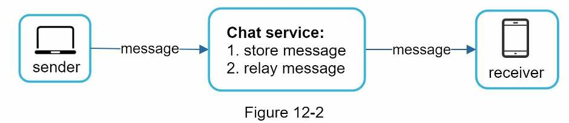
Client-server communication
Sender side: HTTP is fine. The client opens an HTTP connection and sends the message, telling the service to deliver it. The keep-alive header keeps that connection open, so the client avoids repeated TCP handshakes. Facebook initially used HTTP to send messages.
Receiver side is harder. HTTP is client-initiated, so the server can't easily push a message to the receiver. Three techniques simulate a server-initiated connection:
| Technique | How it works | Verdict |
|---|---|---|
| Polling | The client asks "any new messages?" at a fixed interval. Each answer closes the connection. | Costly, depending on frequency. Server resources are spent answering "no" most of the time. |
| Long polling | The server holds the request open until new messages arrive or a timeout is reached. The client then immediately sends a new request. | Fewer empty answers, but three drawbacks (below). |
| WebSocket ✓ | The client opens an HTTP connection and upgrades it with a handshake into a persistent, bidirectional connection. | The most common way to send asynchronous updates from server to client. The book's choice. |
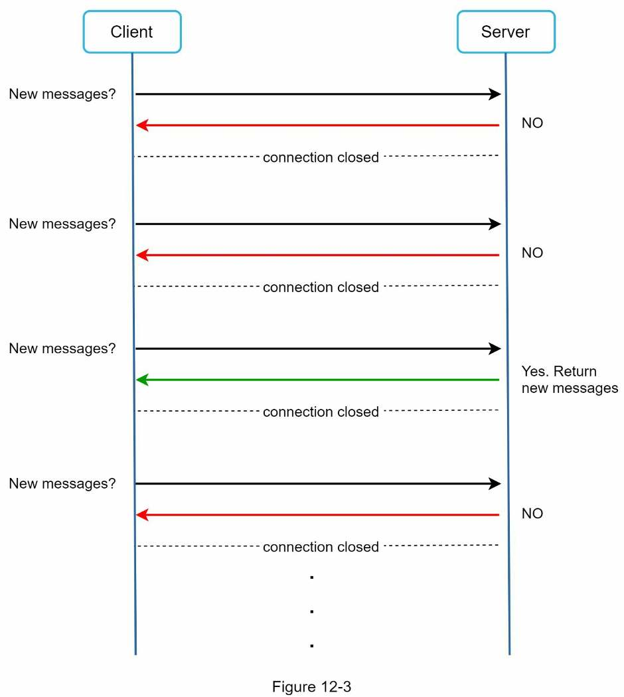
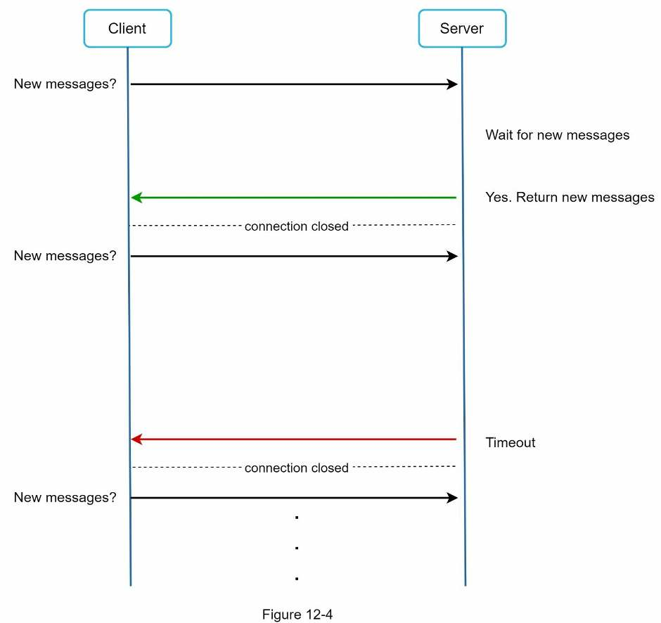
Long polling's drawbacks
- Sender and receiver may be on different servers. HTTP servers are usually stateless. With round-robin load balancing, the server that receives a message may not hold the long-polling connection of the client who should get it.
- The server can't tell whether a client has disconnected.
- It's inefficient. A user who rarely chats still reconnects after every timeout.
Why WebSocket wins
- Initiated by the client, then bidirectional and persistent. It starts as an HTTP connection and is "upgraded" with a well-defined handshake, after which the server can push updates at any time.
- It generally works through firewalls because it uses ports 80 and 443, the same as HTTP/HTTPS.
- Since it's bidirectional, there's no strong technical reason not to use it for sending too. One protocol for both directions makes client and server simpler.
- The cost: connections are persistent, so efficient server-side connection management is critical.
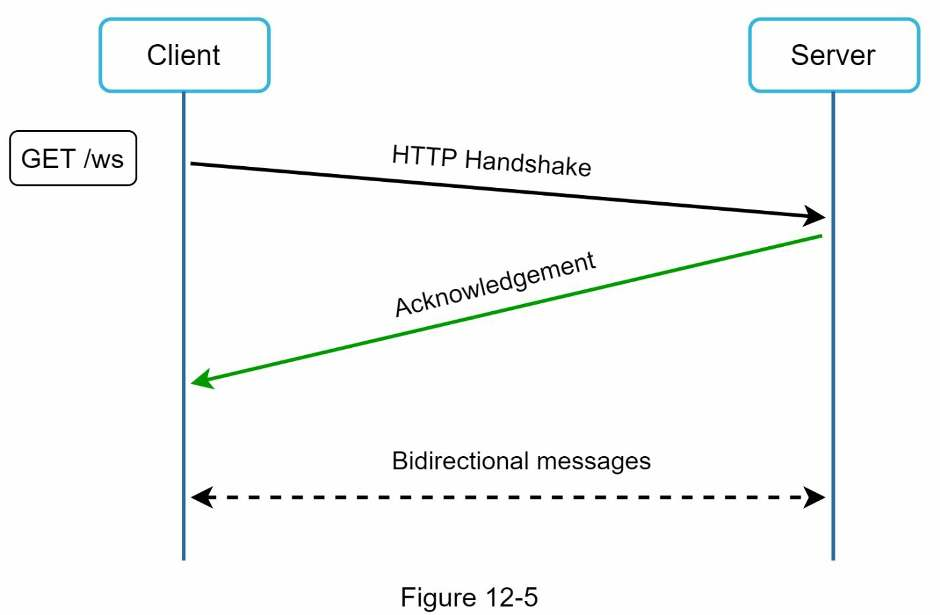
GET /ws handshake → acknowledgement → bidirectional messages.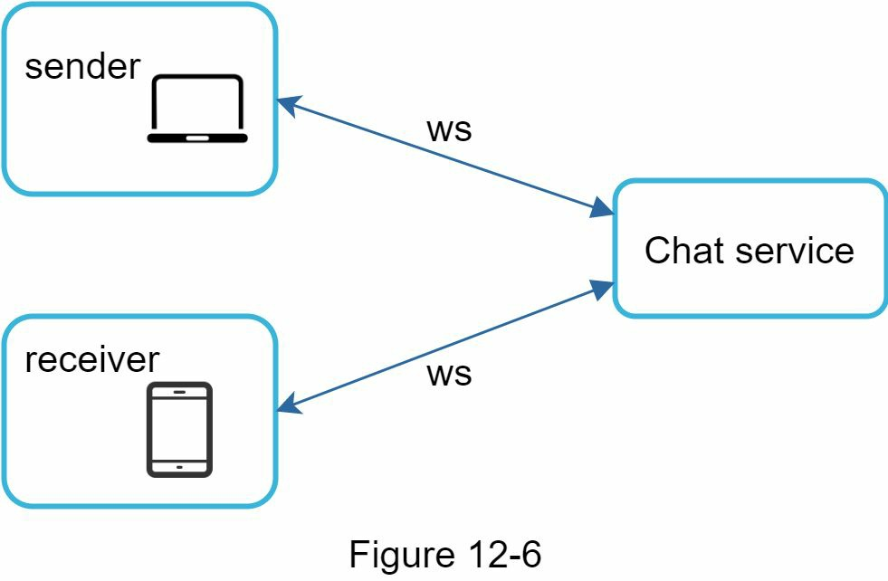
High-level design
The system splits into three categories:
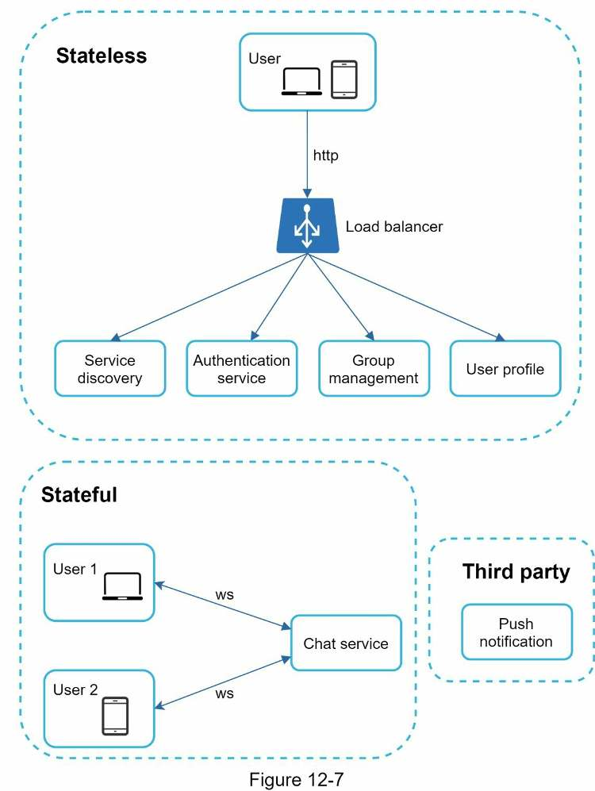
| Category | What's in it | Details |
|---|---|---|
| Stateless services | Login, signup, user profile, authentication, group management, service discovery | Public-facing request/response services behind a load balancer that routes by request path. Can be a monolith or microservices, and many can be bought off the shelf. Service discovery gives the client a list of DNS host names of chat servers it can connect to. |
| Stateful service | The chat service (the only one) | Stateful because each client keeps a persistent connection to one chat server and normally doesn't switch while that server is available. Service discovery works closely with it to avoid overloading servers. |
| Third-party integration | Push notification | The most important integration: it tells users about new messages even when the app isn't running. See Chapter 10. |
Scalability
At small scale, everything fits on one server. Even at our scale, all connections could in theory fit on one modern cloud server; the limiting factor is the number of concurrent connections.
Still, a single-server design is a deal breaker, and the biggest reason is the single point of failure. Proposing it as the final answer raises a red flag.
Adjusted high-level design
Putting it together, the client keeps a persistent WebSocket to a chat server for real-time messaging.
| Component | Job |
|---|---|
| Chat servers | Send and receive messages (real-time service, ws) |
| Presence servers | Manage online/offline status (real-time service, ws) |
| API servers | Everything else: login, signup, change profile, etc. Reached over HTTP through the load balancer. |
| Notification servers | Send push notifications |
| Key-value store | Stores chat history, so a user coming back online sees all previous chats |
Storage
The key decision is relational vs NoSQL. Decide by looking at the data types and their read/write patterns.
| Data | Examples | Store |
|---|---|---|
| Generic data | User profile, settings, friends list | Robust, reliable relational database, with replication and sharding for availability and scalability |
| Chat history | Messages (unique to chat systems) | Key-value store |
Chat history read/write pattern
- Enormous volume: Facebook Messenger and WhatsApp process 60 billion messages a day.
- Only recent chats are accessed often; users rarely look up old chats.
- But features like search, viewing your mentions and jumping to a specific message need random access, and the data access layer must support them.
- Read:write ratio is about 1:1 for 1-on-1 chat apps.
Why a key-value store
- Easy horizontal scaling.
- Very low latency data access.
- Relational databases handle the long tail of data poorly: once indexes grow large, random access is expensive.
- Proven in reliable chat apps: Facebook Messenger uses HBase and Discord uses Cassandra.
Data models
Message data is the most important data.
Message table for 1-on-1 chat (Figure 12-9)
message | ||
|---|---|---|
message_id | bigint | Primary key. Decides message order. |
message_from | bigint | |
message_to | bigint | The book's figure prints "bitint", a typo for bigint. |
content | text | |
created_at | timestamp | Can't decide order: two messages can be created at the same time. |
Message table for group chat (Figure 12-10)
group_message | ||
|---|---|---|
channel_id | bigint | Partition key, first part of the composite primary key. All group-chat queries operate within one channel. |
message_id | bigint | Second part of the composite primary key (channel_id, message_id). |
user_id | bigint | |
content | text | |
created_at | timestamp | |
"Channel" and "group" mean the same thing here.
Message ID
message_id is responsible for message order, so it must be:
- Unique
- Sortable by time: new rows have higher IDs than old ones
| Approach | Usable? | Why |
|---|---|---|
auto_increment (MySQL) | ✗ | NoSQL databases usually don't provide it. |
| Global 64-bit sequence generator, e.g. Snowflake (Chapter 7) | ✓ | Unique and time-sortable across the whole system. |
| Local sequence number generator | ✓ | IDs are unique only within one group/channel. That's enough because order only has to hold inside a 1-on-1 or group channel, and it's easier to implement than a global generator. |
Step 3Design deep dive
Three parts deserve depth: service discovery, message flows and online presence.
Service discovery
Service discovery recommends the best chat server for a client using criteria such as geographic location and server capacity. Apache Zookeeper is a popular open-source choice: it registers every available chat server and picks the best one for a client by predefined criteria.
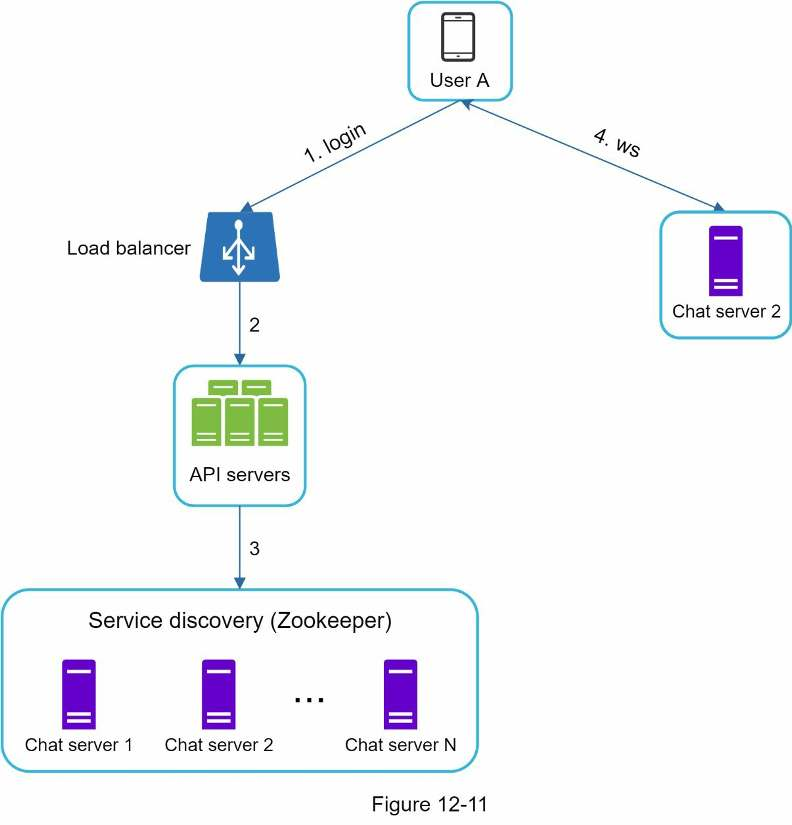
- User A tries to log in to the app.
- The load balancer sends the login request to the API servers.
- After the backend authenticates User A, service discovery finds the best chat server (here, chat server 2) and returns its info to User A.
- User A connects to chat server 2 through WebSocket.
Message flows
1-on-1 chat flow: User A sends a message to User B
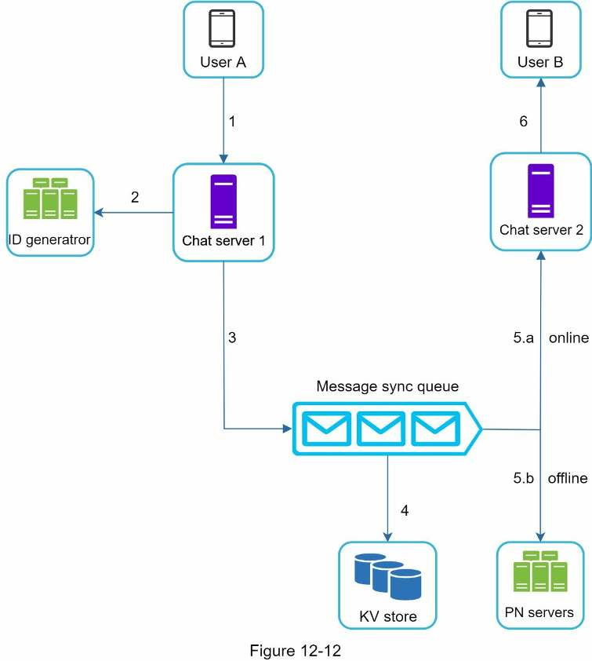
- User A sends a chat message to chat server 1.
- Chat server 1 gets a message ID from the ID generator.
- Chat server 1 sends the message to the message sync queue.
- The message is stored in the key-value store.
- a. If User B is online, the message is forwarded to chat server 2, where User B is connected.
b. If User B is offline, the push notification (PN) servers send a push notification. - Chat server 2 forwards the message to User B over their persistent WebSocket connection.
Message synchronization across multiple devices
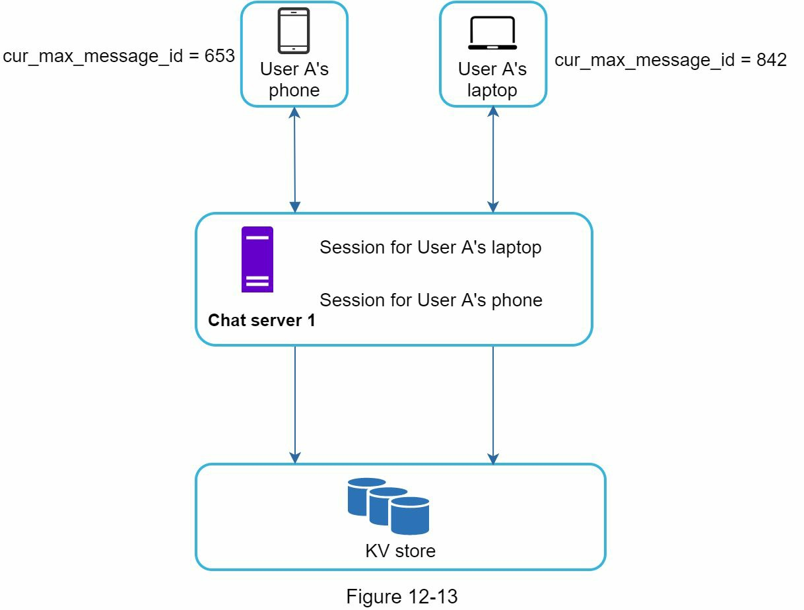
cur_max_message_id on each (653 vs 842).User A's phone and laptop each hold their own WebSocket connection to chat server 1. Each device keeps a variable cur_max_message_id: the latest message ID on that device. A message is new for a device when both hold:
recipient_id == logged-in user's ID
AND message_id (in KV store) > this device's cur_max_message_idBecause each device has its own value, each one simply fetches its new messages from the KV store. In the figure, the phone asks for everything after 653 and the laptop for everything after 842.
Small group chat flow
Group logic is more complicated. Take a group with User A, User B and User C. When A sends a message, it is copied into each other member's message sync queue: one for B and one for C. Think of a member's sync queue as their inbox.
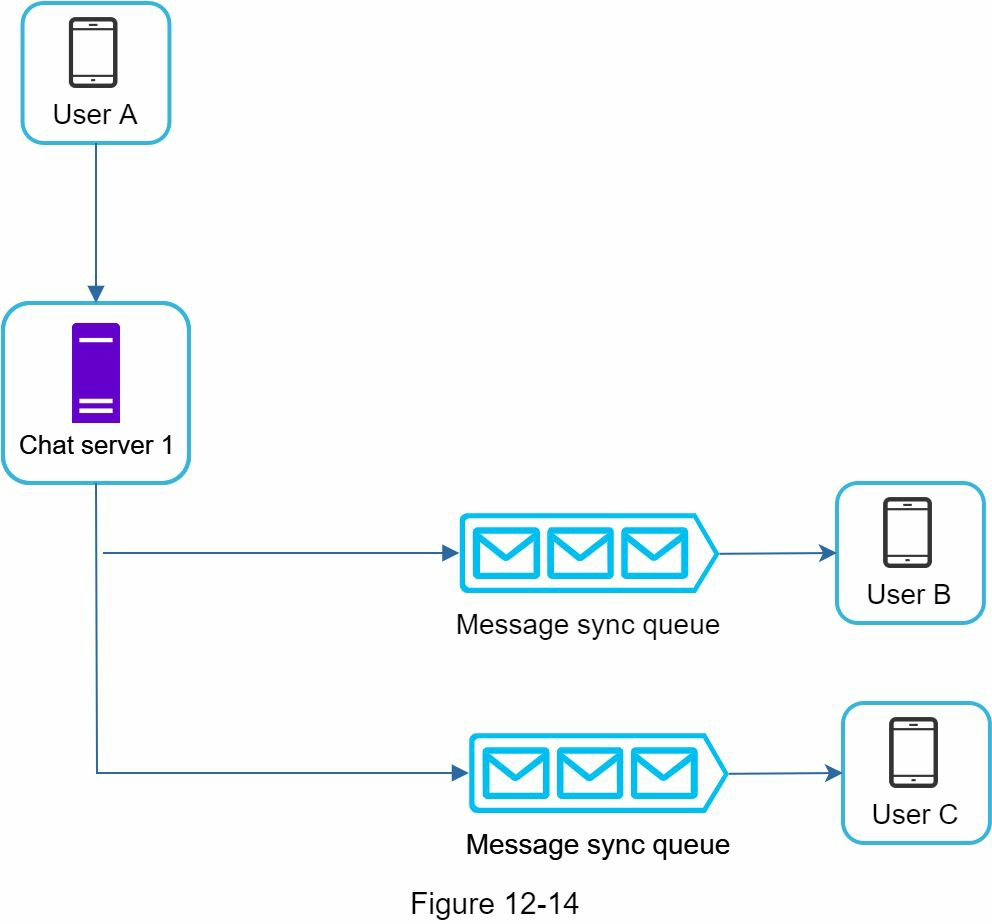
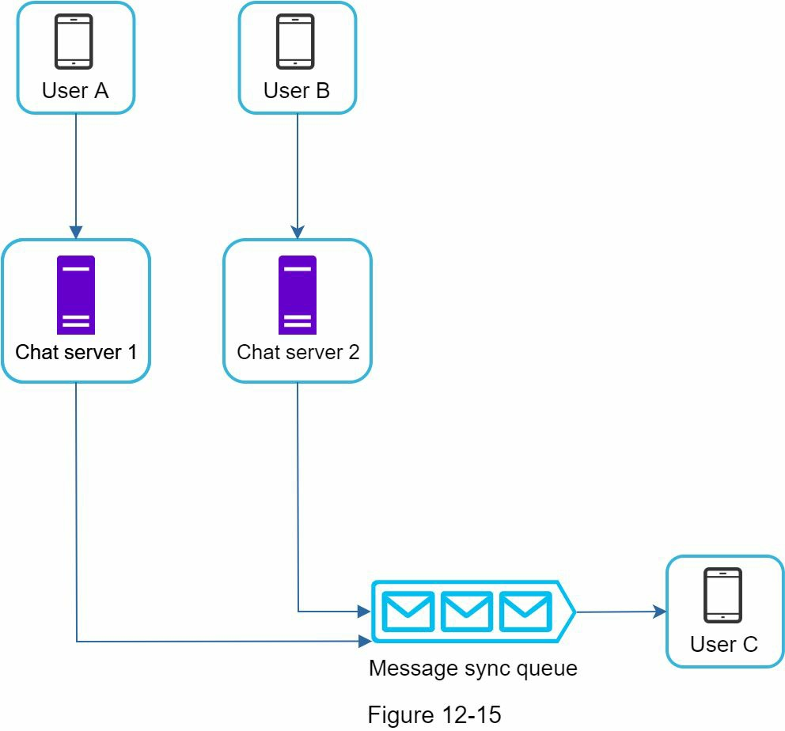
Why it suits small groups
- Simple sync: each client only checks its own inbox for new messages
- With few members, storing a copy per recipient isn't too expensive (a 100-member group means 99 copies per message)
- WeChat uses a similar approach and limits groups to 500 members
Where it breaks
- For groups with many users, storing a copy for every member is not acceptable
Online presence
The online indicator is the green dot next to a user's picture or name. Presence servers manage online status and talk to clients over WebSocket. Four flows change or spread status.
User login
Login follows the service discovery flow above. Once the WebSocket between the client and the real-time service is up, the user's online status and last_active_at timestamp are saved in the KV store, and the indicator shows them as online.
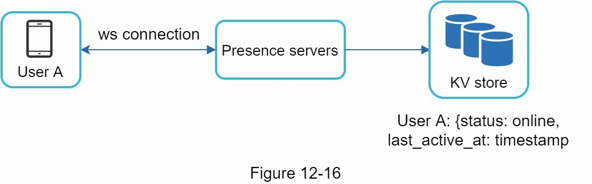
User A: {status: online, last_active_at: timestamp}.User logout
Logout goes from the client through the API servers to the presence servers, which set the status to offline in the KV store. The indicator shows the user as offline.
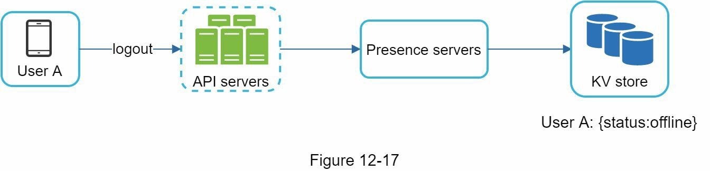
{status: offline} in the KV store.User disconnection
When the network drops, the persistent connection is lost. The naive approach marks the user offline on disconnect and online again on reconnect. Its flaw: users often disconnect and reconnect many times in a short period (for example, driving through a tunnel), so the indicator would flicker, which is a poor user experience.
The fix is a heartbeat. An online client periodically sends a heartbeat event to the presence servers. If a heartbeat arrives within x seconds, the user is online; otherwise they're offline.
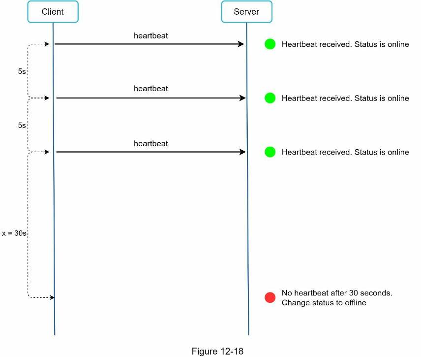
The client sends a heartbeat every 5 s, and x = 30 s. Simulated time runs 5× faster than real time. Drive through a few tunnels, then lose the connection for good, and compare the two status strips (last 60 simulated seconds).
Online status fan-out
Presence servers use a publish-subscribe model with one channel per friend pair. When User A's status changes, the event is published to channels A-B, A-C and A-D, which User B, C and D subscribe to respectively. Clients and servers communicate over real-time WebSocket.
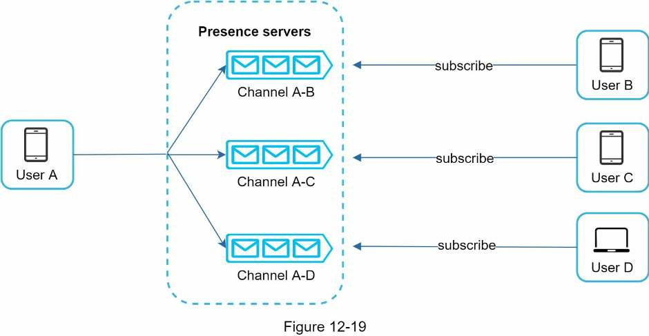
This works for small groups; WeChat uses a similar approach because its user groups are capped at 500. For large groups it's expensive and slow: in a group of 100,000 members, every status change generates 100,000 events. A possible fix is to fetch online status only when a user enters a group or manually refreshes the friend list.
Step 4Wrap up
The design supports 1-on-1 and small group chat over WebSocket, with chat servers for real-time messaging, presence servers for online status, push notification servers, key-value stores for chat history and API servers for everything else.
If there's time left, raise these:
- Media files. Photos and videos are much larger than text. Talk about compression, cloud storage and thumbnails.
- End-to-end encryption. WhatsApp supports it: only the sender and the recipient can read messages.
- Client-side caching of messages reduces data transfer between client and server.
- Improve load time. Slack built a geographically distributed network to cache users' data, channels, etc. for faster load time.
- Error handling.
- Chat server failure: one chat server may hold hundreds of thousands of persistent connections or more. If it goes offline, service discovery (Zookeeper) gives clients a new chat server to reconnect to.
- Message resend: retry and queueing are the common techniques for resending messages.
Self-test
What are the agreed requirements and scale for this chat system?
1-on-1 chat with low latency, small group chat (max 100 members), online presence, multiple devices per account, push notifications; mobile and web; text only, under 100,000 characters; 50 million DAU; history stored forever.
Why is HTTP fine for sending messages but not for receiving them?
Sending is client-initiated, and keep-alive keeps the connection open so handshakes are avoided. Receiving needs the server to push, which HTTP's client-initiated model can't do directly.
What are long polling's three drawbacks?
With stateless, round-robin servers, the server that gets a message may not hold the recipient's long-poll connection; the server can't tell if a client disconnected; and idle users still reconnect after every timeout.
How does a WebSocket connection start, why does it pass firewalls, and why use it for sending too?
The client opens an HTTP connection and upgrades it via a handshake into a persistent, bidirectional connection. It uses ports 80/443 like HTTP/HTTPS. Since it's bidirectional, one protocol for both directions simplifies client and server.
Which service is stateful, and why?
Only the chat service: each client keeps a persistent connection to one chat server and normally stays on it while that server is available. Login, signup, profile and service discovery are stateless HTTP services.
Could one server hold all connections? Why not do it?
In theory yes: 1M concurrent users × ~10 KB per connection ≈ 10 GB of memory. But a single server is a deal breaker, mainly because it's a single point of failure. It's only acceptable as a starting point.
Why store chat history in a key-value store? Give the four reasons.
Easy horizontal scaling; very low latency; relational DBs handle the long tail poorly (large indexes make random access expensive); and it's proven: Facebook Messenger uses HBase and Discord uses Cassandra.
Why order messages by message_id instead of created_at? What's the group table's key?
Two messages can share a created_at. The group table uses composite primary key (channel_id, message_id), with channel_id as partition key because all group queries run within a channel.
What are the options for generating message_id, and why does a local generator suffice?
auto_increment (usually missing in NoSQL), a global 64-bit generator like Snowflake, or a local per-channel sequence. Local works because order only matters within one 1-on-1 or group channel, and it's easier to build.
Walk through the 1-on-1 message flow.
A → chat server 1 → ID from ID generator → message sync queue → stored in KV store → if B is online, forwarded to chat server 2 and then to B over WebSocket; if offline, the PN servers send a push notification.
How do a user's multiple devices stay in sync?
Each device keeps its own cur_max_message_id and fetches from the KV store every message whose recipient is the logged-in user and whose ID is greater than that value.
How does small group chat deliver messages, and why only for small groups?
The sender's message is copied into each member's message sync queue (inbox), so clients check only their own inbox. A copy per member is cheap for small groups (WeChat caps at 500) but unacceptable for very large ones.
Why use heartbeats instead of marking users offline on disconnect? Give the book's numbers.
Users drop and reconnect often (e.g. in a tunnel), so the naive approach makes the indicator flicker. With heartbeats every 5 s, a user is marked offline only after no heartbeat for x = 30 s.
How do friends learn about a status change, and what breaks for large groups?
Pub-sub with one channel per friend pair (A-B, A-C, A-D). In a 100,000-member group each change creates 100,000 events, so fetch status only when a user enters the group or refreshes the friend list.
What happens when a chat server goes down?
Its clients (possibly hundreds of thousands of connections) lose their WebSockets; service discovery (Zookeeper) gives them a new chat server to reconnect to. Unsent messages are handled with retry and queueing.
Terms to know
- Polling
- The client asks the server for new data at a fixed interval.
- Long polling
- The server holds the client's request open until data arrives or a timeout, then the client asks again.
- WebSocket
- A persistent, bidirectional connection that starts as HTTP and is upgraded with a handshake; uses ports 80/443.
- Keep-alive
- An HTTP header that keeps a connection open across requests, avoiding repeated TCP handshakes.
- Stateful service
- A service where each client is tied to a specific server; here, the chat servers holding WebSocket connections.
- Service discovery
- Picks the best chat server for a client (location, capacity). Apache Zookeeper is the book's example.
- Message sync queue
- A per-recipient inbox of messages waiting to be delivered.
- cur_max_message_id
- The latest message ID a device has; it fetches anything newer.
- Heartbeat
- A periodic "I'm alive" event from client to presence servers; silence for x seconds means offline.
- Publish-subscribe
- Publishers send events to channels; every subscriber of a channel receives them.
- Long tail
- The large mass of rarely accessed (here, old) data that makes indexes huge and random access costly.
Book references (go deeper)
- Erlang at Facebook
- Messenger and WhatsApp process 60 billion messages a day
- Long tail
- The Underlying Technology of Messages
- How Discord Stores Billions of Messages
- Announcing Snowflake
- Apache ZooKeeper
- From nothing: the evolution of WeChat background system (in Chinese)
- End-to-end encryption (WhatsApp)
- Flannel: An Application-Level Edge Cache to Make Slack Scale